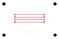

Agent intelligence.
Sub-agent execution graph, learning curves, and the memory bank — how the system improves across revisions.
No events yet.
No heuristics acquired yet.
No episodic traces yet.
No adaptation data yet.
SIGNAL BREAKOUT
From intent to something tangible.
Real generated files. Source and measurements travel with the geometry.
Your designs, in this browser.
Everything here lives in your browser's local storage — nothing is uploaded, no account exists. Import a design bundle from a file, create a new design from the parametric template, edit dimensions and save local revisions, then export the bundle.
Four signals. One small board.
Connectivity diagram derived from the generated board nets. External power, ground, SDA and SCL pass between J1 and J2.
Signal breakout only. No MCU, motor driver, power regulation, or I²C pull-ups. This diagram is not a KiCad schematic.
A place for the connections.
60 × 40 mm · 2 layers · 2 headers · 4 routed nets
